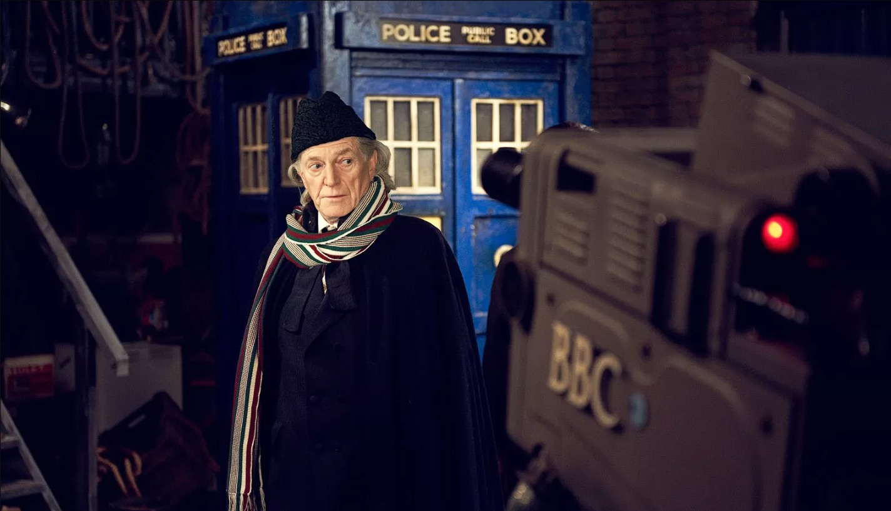
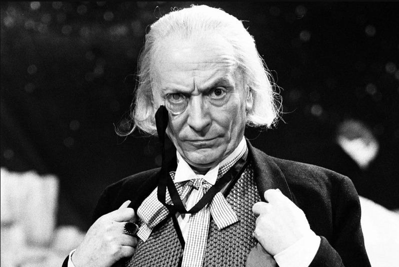
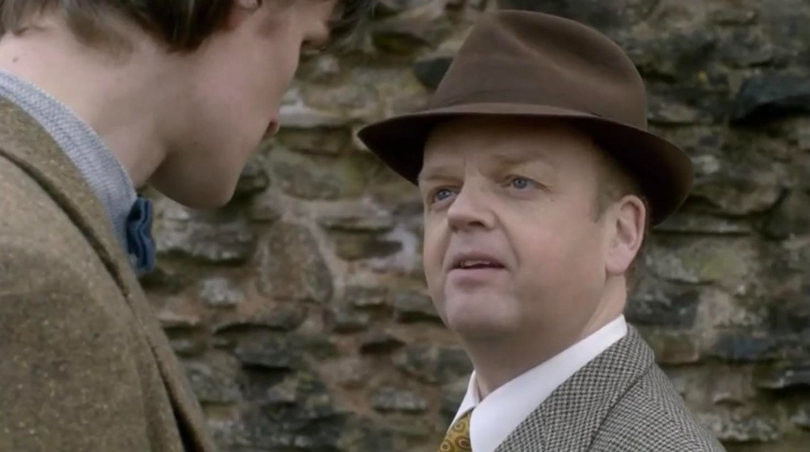
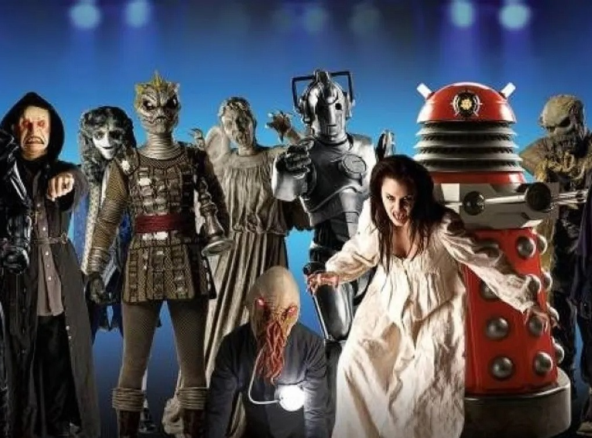

Doctor Who é uma série de ficção científica britânica, produzida e transmitida pela British
Broadcasting Corporation (BBC) desde 1963. A série retrata as aventuras do Doutor, um alienígena da
espécie fictícia de Senhores do Tempo do planeta Gallifrey que explora o universo em sua máquina
capaz de viajar pelo espaço e pelo tempo, conhecida como TARDIS (Time and Relative Dimension in
Space), cuja aparência exterior se assemelha a uma cabine de polícia londrina de 1963. Juntamente
aos seus companheiros, o Doutor enfrenta uma variedade de inimigos, enquanto trabalha para salvar as
civilizações, ajudar as pessoas comuns e corrigir erros.
Começando com William Hartnell, diversos atores já atuaram na série como diferentes encarnações do
Doutor. Em papel de destaque, já foram ao todo 19 atores dando vida a 17 encarnações, sendo quinze
"oficiais" e duas versões especiais de John Hurt e Jo Martin (o Primeiro Doutor foi
interpretado por três atores diferentes, enquanto David Tennant interpreta tanto o Décimo
quanto o Décimo Quarto Doutor). A transição de um ator para outro é descrita no enredo da série como
regeneração, um processo biológico dos Senhores do Tempo pelo qual o personagem do Doutor assume um
novo corpo e uma nova personalidade, que ocorre quando o personagem sofre uma lesão que seria fatal
para a maioria das outras espécies. Apesar de cada interpretação ser diferente, e em algumas
ocasiões uma encarnação encontrar outra, elas são pensadas para serem aspectos do mesmo personagem.
O Doutor atualmente é interpretado por David Tennant, que assumiu o papel depois da aparição final
de Jodie Whittaker em 23 de outubro de 2022, mas que apenas fará sua aparição nos especiais de 60
anos da série, previstos para lançarem em novembro de 2023.
A série é uma parte significativa da cultura popular britânica, e em outros países se tornou
um programa favorito clássico da televisão. O show tem influenciado gerações de profissionais da
televisão britânica, muitos dos quais cresceram assistindo a série. A série está listada no
Guinness World Records como a série de ficção científica mais duradoura do mundo, assim como a
mais bem-sucedida.
O programa originalmente funcionou de 1963 a 1989. Depois de uma tentativa frustrada de retomar a
produção normal em 1996 com um piloto secreto na forma de um filme para a televisão, o programa foi
relançado em 2005 pela BBC Wales, em Cardiff com a produção de Russell T Davies, que atuou como
produtor executivo e escritor-chefe nos cinco primeiros anos. A primeira temporada no século XXI,
com Christopher Eccleston como o Nono Doutor, foi produzida pela BBC.[18] As segundas e terceiras
temporadas tiveram algum dinheiro de desenvolvimento contribuído pela Canadian Broadcasting
Corporation (CBC), que foi creditada como co-produtora. Doctor Who também gerou spin-offs em
várias mídias, incluindo Torchwood (2006) e As Aventuras de Sarah Jane (2007), ambas as séries
criadas por Russell T Davies; Class (2016), criada por Patrick Ness e co-Produzida por Steven
Moffat; uma série de vídeos dividida em quatro partes chamado P.R.O.B.E (1994) e um único episódio
piloto de K-9 and Company (1981). Houve também muitas paródias e referências culturais do personagem
em outras mídias. K-9 (2009), criada por Bob Baker e Paul Tams, apesar de não se passar no mesmo
universo das demais, foi uma série anglo-australiana de 26 episódios que utilizou alguns elementos
de Doctor Who, como o personagem K-9; é também a única a não ter sido transmitida originalmente pela
BBC, e sim pela Ten Network, na Austrália, e pela Disney XD, na Europa
Antecedentes
Em 1955, surgiu a Independent Television (ITV), a primeira emissora comercial do Reino Unido. Com uma
programação mais popularesca, a ITV começou a competir diretamente com a British Broadcasting
Corporation (BBC) em termos de audiência; de acordo com a revista Veja, mais de 30% do público da
BBC passou a acompanhar diariamente as produções da concorrente, que ia desde séries de TV que
retratavam diversos tipos de heróis vivendo diferentes aventuras, em ambientes policiais ou de
espionagens, bem como programas de época e outros importados da televisão estadunidense.[21] A BBC,
que era a única emissora de TV britânica até então, ao ver sua audiência despencar, começou a
oferecer um número maior de séries que passaram a fazer parte de sua programação voltada para
documentários, teleteatros e diversos programas culturais
Em março de 1962, Eric Maschwitz, Auxiliar e Assessor do Controlador de Programação da BBC, pediu a
Donald Wilson, Chefe do Departamento de Roteiros, para que o Grupo de Pesquisa do canal preparasse
um estudo avaliando a viabilidade de a empresa produzir uma nova série de ficção científica.[23] O
levantamento foi realizado por Alice Frick e Donald Bull — membros da equipe — e entregue no mês
seguinte, recebendo muitos elogios de Wilson, Maschwitz e do Controlador de Programação Assistente,
Donald Baverstock.[24] Uma outra análise, com ideias específicas para o formato, foi encomendada e
entregue em julho. Preparado por Frick com outro membro do Departamento de Roteiros, John Braybon,
esse relatório recomendou uma produção que tivesse como base a viagem no tempo, por esta ser uma
ideia "particularmente digna de desenvolvimento".
O gênero de ficção científica já havia sido testado na televisão britânica; na década de 1950, a
própria BBC exibiu o arco avulso The Quatermass Experiment (1953), enquanto a ITV também exibiu
arcos, iniciando com Target Luna (1960), que gerou três sequências, intituladas Pathfinders in Space
(1960), Pathfinders to Mars (1960-61) e Pathfinders to Venus (1961).[26] Em dezembro, o canadense
Sydney Newman tornou-se o novo Chefe de Drama da BBC Television. Fã do gênero, ele supervisionou
diversas produções em seus cargos na Associated British Corporation (ABC) e na Canadian Broadcasting
Corporation (CBC).[27] Em março de 1963, Baverstock — elevado à condição de Controlador de
Programação — o avisou que havia uma lacuna no horário nas noites de Sábado entre o esportivo
Grandstand e o programa de música pop Juke Box Jury.[28] Idealmente, a produção deveria ter um apelo
às crianças, que já estavam habituadas ao horário, ao público adolescente de Juke Box Jury e aos
espectadores adultos de Grandstand.[29] Newman decidiu que ficção científica seria o melhor estilo
para o espaço. O produtor aproveitou o estudo supracitado e começou a participar de diversas sessões
de brainstorming com Wilson, Braybon, Frick e outro escritor da equipe da emissora, C.E. "Bunny"
Webber.
Premissa
Doctor Who segue as aventuras de um renegado Senhor do Tempo do planeta Gallifrey que simplesmente
atende pelo nome de "Doutor". Fugiu de seu planeta natal em uma TARDIS (abreviação para "Time and
Relative Dimensions in Space" em português "Tempo e Dimensões Relativas no Espaço") Tipo 40 - o que
lhe permite viajar através do tempo e espaço. Devido a um mau funcionamento do "circuito camaleão"
da TARDIS, que normalmente permite que a TARDIS possa assumir a aparência de objetos locais para
disfarçar-se, a TARDIS do Doutor permanece fixa como uma cabine telefônica policial britânica.[30] O
Doutor raramente viaja sozinho e muitas vezes traz um ou mais companheiros para compartilhar essas
aventuras. Como um Senhor do Tempo, o Doutor tem a capacidade de se regenerar quando seu corpo é
mortalmente danificado, ganhando uma nova aparência e personalidade. O Doutor ganhou inúmeros
inimigos recorrentes durante as suas viagens, incluindo Daleks, Cybermen e outros Senhores do Tempo
renegados, como o Mestre.
História
Doctor Who apareceu pela primeira vez na televisão pela BBC em 23 de novembro de 1963 às 17h16min20,
no horário padrão de Londres, porém o episódio teve de ser reprisado na semana seguinte, pois na
data do lançamento original, a BBC estava cobrindo o Assassinato de John Kennedy.[32][33][34]
Seguindo discussões e planos que estavam em curso há um ano, o Chefe da divisão de Dramas, o
canadense Sydney Newman, foi o principal responsável pelo desenvolvimento do programa, com o
primeiro formato documentado para a série sendo escrito por Newman, juntamente com o Chefe do
Departamento de Roteiro (mais tarde chefe de Publicações Periódicas) Donald Wilson e o escritor
pessoal C.E. Webber. O escritor Anthony Coburn, o editor de histórias David Whitaker e a produtora
inicial Verity Lambert também contribuíram fortemente para o desenvolvimento da série.[35] Waris
Hussein, diretor dos primeiros episódios transmitidos, foi um dos primeiros imigrantes indianos com
papel de destaque na televisão britânica, além de ser assumidamente homossexual.[36] O programa foi
originalmente concebido para apelar a um público familiar,[37] como um programa educacional com
viagens no tempo como um meio para explorar ideias científicas e momentos famosos da história.[38]
Em 31 julho de 1963, Whitaker encomendou a Terry Nation que escrevesse uma história com o título de
"Os Mutantes". Originalmente os Daleks e os Thals foram vítimas de uma bomba de nêutrons alienígena,
mas posteriormente Terry Nation abandonou os alienígenas e transformou os Daleks em agressores.
Quando o roteiro foi apresentado a Newman e Wilson, foi imediatamente rejeitado, uma vez que o
programa não podia conter "monstros de olhos esbugalhados". A primeira série de episódios foi
concluída e a BBC acreditava que era crucial que a seguinte fosse um sucesso, no entanto, "Os
Mutantes" foi o único script pronto para ir ao ar e a equipe teve poucas opções a não ser usá-lo.
Segundo a produtora Verity Lambert:
Nós não tínhamos muita escolha — tínhamos apenas o episódio dos Daleks... Nós tivemos uma
pequena crise de confiança porque Donald [Wilson] foi tão resoluto quanto a não usá-lo. Se
tivéssemos algo pronto, teríamos usado.
O roteiro de Terry Nation tornou-se a segunda série de episódios de Doctor Who - "Os Daleks" (ou "Os
Mutantes"). A série de episódios apresentou os alienígenas de mesmo nome que se tornariam os
monstros mais populares da série, e foram responsáveis pela primeira explosão de merchandising da
BBC.
Na década de 1960 foram produzidos dois filmes considerados "fora da grade", tendo Peter Cushing como
o personagem Dr. Who: "Dr. Who and the Daleks" (1965) e "Daleks' Invasion Earth: 2150 A.D." (1966),
mudando as características dos principais personagens da versão original. As atuais referências os
colocam como filmes existentes dentro do universo da série, porém os acontecimentos não são reais
dentro do universo.
A divisão de séries de Drama da BBC produziu 26 temporadas do programa, exibidas pela BBC 1. O
primeiro ator a interpretar o papel do Doutor em 1963 foi William Hartnell que, devido a problemas
de saúde, foi substituído por Patrick Troughton em 1966. Na época, o conceito atual de regeneração
ainda não era bem estabelecido, e a troca não foi bem justificada na série. Em 1970, a série passou
a ser transmitida em cores, substituindo o antigo formato em preto e branco. Com isso, o ator Jon
Pertwee assumiu o papel do Doutor. Em 1974, Tom Baker assumiu o papel e permaneceu por 7 anos, sendo
o ator a interpretar o Doutor por mais tempo. Em 1981, Peter Davison assume o papel aos 29 anos,
sendo o ator mais novo, até os dias de hoje, a interpretar o personagem e permanece até 1986, sendo
substituído pelo ator Colin Baker. Em 1986, a série quase foi cancelada por Michael Grade, porém no
lugar do cancelamento, ocorreu um hiato de 18 meses sem nenhum episódio. Quando a série voltou,
Sylvester McCoy assumiu o papel como a sétima encarnação do Doutor.[43][44] Porém, com a queda nos
números de espectadores, o declínio na percepção pública do programa e um espaço de transmissão
menos proeminente, a produção foi suspensa em 1989 por Jonathan Powell, controlador da BBC 1.[45]
Ainda que (como co-estrela da série Sophie Aldred relatou no documentário Doctor Who: Mais de 30
Anos na TARDIS) tenha sido efetivamente, se não formalmente, cancelada com a decisão de não
encomendar uma já planejada vigésima sétima temporada do programa para transmissão em 1990, a BBC
repetidamente afirmou que a série iria retornar.
Ainda que a produção própria estivesse interrompida, a BBC esperava encontrar uma produtora
independente para relançar o programa. Philip Segal, um britânico expatriado que trabalhou para o
braço televisivo da Columbia Pictures nos Estados Unidos, havia se aproximado da BBC sobre um tal
empreendimento ainda em julho de 1989, enquanto a vigésima sexta temporada da série ainda estava em
produção.[46] As negociações de Segal finalmente levaram a um filme para a televisão de Doctor Who,
transmitido pela rede FOX em 1996, como uma co-produção entre a FOX, Universal Pictures, a BBC e BBC
Worldwide. Embora o filme tenha sido bem-sucedido no Reino Unido (com 9,1 milhões de espectadores),
não foi tão bem nos Estados Unidos, portanto não sendo considerado suficiente para a retomada da
produção da série.
Mídias licenciadas, como romances e peças de áudio, disponibilizavam novas histórias, mas um programa
de televisão para Doctor Who permaneceu dormente até 2003. Em setembro desse ano,[47] a BBC anunciou
a produção de uma nova série após vários anos de tentativas pela BBC Worldwide para encontrar apoio
para uma versão de longa-metragem. Os produtores executivos da nova encarnação da série foram os
escritores Russell T Davies e o Chefe de Drama da BBC Cymru Wales, Julie Gardner. A série foi
vendida para muitos outros países em todo o mundo.
A versão de 2005 de Doctor Who é uma continuação direta da série de 1963-1989,[nota 2] assim como o
telefilme de 1996, estrelado por Paul McGann como o Oitavo Doutor. Isso a difere outras séries
relançadas que ou foram reimaginadas ou reinicializadas (por exemplo, Battlestar Galactica [2004] e
Bionic Woman [2007]), ou série a ter lugar no mesmo universo como o original, mas em um período
diferente e com personagens diferentes (por exemplo, Star Trek: The Next Generation e
spin-offs).[49] Desde o relançamento da série em 2005, já foram exibidas treze temporadas, com a
confirmação da décima quarta que deve lançar em 2024[50], com diversos episódios especiais de
páscoa, natal ou ano-novo todos os anos desde 2005, com exceção de 2018, e outros episódios
especiais avulsos em 2009, 2013, 2022 e 2023.
Doctor Who finalmente voltou com o episódio "Rose" na BBC One em 26 de março de 2005. Com o retorno,
Christopher Ecclestone assume o papel como a nona encarnação do Doutor, porém problemas internos
levam ele a ser substituído no mesmo ano, para o especial de natal, pelo ator David Tennant. Nenhuma
temporada completa foi filmada em 2009, devido a compromissos de Tennant para Hamlet, embora quatro
especiais adicionais estrelando sua encarnação do Doutor foram transmitidos. Na Primavera de
2010[51] Steven Moffat substituiu Russell T Davies como escritor principal e produtor executivo. Com
ele, o papel principal da série foi assumido pelo ator Matt Smith.[52] Em 2013, no aniversário de 50
anos da série, dentre diversos lançamentos exclusivos, o episódio "The Day of the Doctor", lançado
na data do aniversário, apresentou duas novas encarnações do personagem. A primeira, interpretada
pelo ator John Hurt, foi uma versão sombria que o Doutor tentou apagar de sua memória, tendo
aparecido somente nesse especial. A segunda encarnação apresentada no especial de 50 anos da série
foi a de Peter Capaldi, que assumiria o papel a partir da oitava temporada. Em 2016, novamente não
houve nenhuma temporada completa, apenas o especial de natal "The Return of Doctor Mysterio". Em
janeiro de 2016, Steven Moffat anunciou que ele estaria deixando a série após a conclusão da 10ª
temporada, lançada em 2017, e que seria substituído por Chris Chibnall em 2018.[53] Chibnall já era
conhecido pelos fãs por ter escrito episódios famosos, como "42", "Dinosaurs on a Spaceship" e "The
Power of Three". Junto com Chibnall, foi anunciado que Jodie Whittaker assumiria o papel de Peter
Capaldi como o Doutor (ou a Doutora), estrelando como a primeira atriz mulher a interpretar o papel
do personagem.[54] Em 2020, o episódio "Fugitive of the Judoon" introduziu Jo Martin como uma
encarnação que teria vivido antes da que foi interpretada em 1963 por William Hartnell. Além de ser
a segunda atriz mulher a interpretar o papel, Jo Martin foi a primeira pessoa negra a dar vida ao
Doutor, e voltaria a interpretar esse papel em episódios futuros. Tanto Chibnall quanto Whitakker
anunciaram que, após a 13ª temporada, lançada em 2021, e alguns episódios especiais em 2022, ambos
sairiam da série. Após 12 anos fora da produção, Russell T Davies foi anunciado como substituto de
Chris Chibnall para os especiais de 60 anos da série, em 2023, e suas subsequentes temporadas. Com
seu retorno, duas novas encarnações do Doutor também foram anunciadas, a décima quarta, interpretada
novamente por David Tennant, e a décima quinta, interpretada por Ncuti Gatwa, primeiro homem negro a
interpretar o papel do Doutor.
Apesar da produção da série não parar em nenhum momento após sua retomada em 2005, a volta de Russell
T Davies em 2023 foi encarada por muitos como uma nova retomada da série, que enfrentou nas
temporadas produzidas por Chibnall seus anos mais difíceis desde 1989. Essa volta contou também com
David Tennant, considerado o ator a interpretar o papel do Doutor mais querido pelo público adulto
da série, além de diversas outras participações especiais nos episódios comemorativos de 60 anos.
Além disso, uma parceria com a produtora Bad Wolf Ltd e com o serviço de streaming Disney+,
trouxeram esperanças de que a audiência da série seja novamente alavancada.
Produção

A produção original de Doctor Who era realizada com poucos recursos. Cada episódio de 25 minutos era
registrado em vídeo (cenas de estúdio) e filmes de 16 mm (cenas em locação). A maquiagem, cenários e
efeitos visuais eram precários, quase amadorísticos, mas a série fez enorme sucesso na Inglaterra,
graças aos roteiros criativos que colocavam o Doutor e seus amigos em mirabolantes aventuras que
aconteciam em diversos locais do espaço e do tempo. A série iniciou como um programa educacional
para crianças, onde o Doutor conhecia figuras famosas do passado e participava de fatos
históricos.[57] Mas rapidamente passaram a predominar as aventuras de ficção científica onde os
heróis encontravam estranhas civilizações e criaturas extraterrestres. Normalmente um grupo de
episódios, que costumava variar entre 4 e 6, formava um serial, ou uma história, e cada temporada
era composta por alguns desses seriais. Em 1989, a BBC suspendeu Doctor Who, mesmo ainda com uma boa
audiência, sob a alegação de que haveria apenas um hiato maior entre a 26.ª e a 27.ª temporada.[58]
Na verdade, a BBC estava diante de um impasse — frente a outras séries contemporâneas de ficção
científica norte-americanas, de produção bem mais sofisticada, Doctor Who não tinha como competir
tecnicamente, e para enfrentar a concorrência seu orçamento teria que ser multiplicado. Como a BBC à
época era comandada por executivos críticos ao gênero de ficção científica e que optaram por não
liberar os recursos necessários, a série entrou num limbo do qual saiu apenas em 1996, com a
tentativa frustrada de trazê-la de volta numa parceria com a FOX e a Universal.[59] Apesar de
sofisticado, o telefilme foi considerado americanizado demais. Finalmente em 2005, a BBC do País de
Gales trouxe de volta a série, com um nível de produção muito superior ao da original. A versão
atual possui um orçamento que permite a utilização de elaboradas maquiagens e efeitos em computação
gráfica (CGI).[60] Cada nova temporada é composta por entre 10 e 13 episódios de cerca de 45 a 50
minutos e um especial de natal ou ano-novo com cerca de 60 minutos, gravados em vídeo de alta
definição e posteriormente passados para película de 35mm.[38] Exceto pelos especiais, os episódios,
ainda que muitas vezes contando histórias autônomas, fazem parte de um arco que é desenvolvido ao
longo da temporada. A 13ª temporada é uma exceção ao formato padrão, já que são apenas 6 episódios
regulares contando uma mesma história, sendo também conhecida como Flux ou Fluxo, em português,
também se destacando por ter o primeiro e único especial de páscoa, "Legend of the Sea Devils". As
temporadas conservam e continuam a história clássica do Doutor, por meio do retorno de vilões e
personagens secundários da série clássica, assim como a aparição de atores que interpretaram versões
passadas do personagem — já tivemos a volta, dentre outros diversos outros, dos vilões Daleks, dos
Cybermen, do Mestre, das antigas companheiras do Doutor Tegan e Sarah Jane, assim como a aparição de
atores como Peter Davison, Tom Baker, Paul McGann, Colin Baker e Sylvester McCoy, que interpretaram
o Doutor na série clássica e no telefilme de 1996.
Epiódios
A série clássica de Doctor Who foi composta por 26 temporadas, exibidas a partir de 23 de novembro de
1963 até 6 de dezembro de 1989. Durante a exibição da série, cada episódio semanal fazia parte de
uma história (ou serial, "Arco") — geralmente composta de 4 a 6 episódios de 25 minutos cada; nas
últimas temporadas era composta de 3 episódios de 45 a 50 minutos cada. As exceções notáveis foram:
"The Daleks' Master Plan" (1965-1966), que foi exibido em 12 episódios, a história final da 6ª
temporada "The War Games" (1969) com 10 episódios e a 23ª temporada "The Trial of a Time Lord"
(1986) que teve 14 episódios (dividido em 3 códigos de produção e 4 segmentos narrativos).
Ocasionalmente as temporadas possuíam eventos que conectavam suas histórias, como a 8ª temporada, com
o Doutor lutando contra o Mestre (Senhor do Tempo renegado e rival do Doutor), a 16ª temporada ("The
Key to Time") que mostra a busca do Doutor e Romana I pela Chave do Tempo, a 18ª temporada mostrando
a jornada do Doutor e Romana II no E-Space e a 20ª temporada com a trilogia "Black Guardian".
Em 2005, o formato da série mudou com cada temporada possuindo entre 10 e 13 episódios de 45 a 50
minutos e um especial de natal ou ano-novo de 60 minutos de duração. Cada temporada inclui várias
histórias individuais ou separadas em alguns episódios, todas conectadas num mesmo arco que
geralmente é resolvido no episódio final. Alguns episódios, como "Journey's End" (2008), "The
Eleventh Hour" (2010) e "Deep Breath" (2014) excederam o tempo de 1 hora de duração.[63] A exceção a
esse formato é a 13ª temporada ("Flux"), que contém apenas 6 episódios, além de ser seguida por três
episódios especiais: um de ano-novo, um de natal e um de regeneração.
Em 2008, a série começou a ser filmada em HDTV 1080p com formato 16:9, com o especial "Planet of the
Dead" (2008), e transmitido simultaneamente na BBC One e BBC HD. Após 1 década utilizando o formato
16:9, em 2018, com a 11ª temporada, foi implementada a utilização do formato 2:1.
Mais de 800 episódios de Doctor Who foram televisionado desde 1963, variando entre os episódios de 25
minutos (1963 – 1983), episódios de 45 a 50 minutos (1984 – atualmente), três produções de
longa-metragem (o especial de 20 anos "The Five Doctors", o telefilme "Doctor Who" e o especial de
50 Anos "The Day of The Doctor"), 15 especiais de natal, 5 especiais de ano-novo, 1 especial de
páscoa e outros episódios especiais adicionais.
Episódios Perdidos
Entre os anos de 1964 e 1973 uma grande quantidade de material de fitas de vídeo da BBC foi destruído
ou reutilizado por conta de um mau-armazenamento que levou a deterioração da qualidade da
transmissão. Isto incluiu muitos episódios de Doctor Who que foram originalmente transmitidos entre
1963 e 1968, nos períodos em que o Doutor era interpretado por William Hartnell e Patrick Trougthon.
Ao todo, 97 dos 253 episódios produzidos durante os primeiros seis anos da série não foram mantidos
nos arquivos da BBC.
Alguns episódios foram recuperados pela BBC, a partir de arquivos de outros países que haviam
comprado cópias para a transmissão e gravações caseiras feitas por fãs. Existem versões em áudios de
todos os episódios perdidos, que foram gravados pelos telespectadores e clipes curtos de cada
história, com exceção de "Marco Polo", "Mission to the Unknown" e "The Massacre of St. Bartholomew's
Eve", que não têm nenhuma forma de vídeo.
Além destes, há fotografias dos bastidores feitas pelo fotógrafo John Cura, que foi contratado pela
BBC para documentar muitos de seus programas nos anos 1950 e 60, incluindo Doctor Who. Essas imagens
foram utilizadas pelos fãs para fazer reconstruções dos episódios. Essas reconstruções foram
toleradas pela BBC, desde que não fossem vendidas em troca de lucro.
Entre os episódios perdidos mais procurados está a quarta e última parte de "The Tenth Planet"
(1966), que mostra a despedida de William Hartnell e a primeira aparição de Patrick Trougthon como o
Doutor. O único vídeo existente desse episódio, são alguns segundo da cena de regeneração que foi
exibida no programa Blue Peter, sendo reutilizada também no episódio de regeneração do décimo
segundo Doutor "Twice Upon a Time".
Em dezembro de 2011, foi anunciado que a terceira parte de "Galaxy 4" e a segunda parte de "The
Underwater Menace" tinha sido devolvido à BBC por um fã que os tinha comprado nos anos 1980, sem
perceber que a BBC não tinha cópias deles.
Em 2013, ano que a série completou seus 50 anos, a BBC anunciou que onze episódios, do qual oito eram
perdidos, foram encontrados em uma estação de retransmissão de televisão nigeriana.[70] Seis dos
onze filmes descobertos foram a seis partes da história "The Enemy of the World", da qual todos, com
exceção do terceiro episódio, estavam desaparecidos.[71] Além disso, também encontraram cinco partes
de "The Web of Fear" que inclui os episódios 2, 4, 5 e 6 anteriormente faltante, apenas o episódio 3
desse arco continua desaparecido.
Desde 2006, a BBC Studios, em parceria com outros estúdios de animação como Cosgrove Hall Films,
Planet 55 e Big Finish, reconstruiu diversos episódios perdidos por meio de animações. Utilizando as
faixas de áudio que foram recuperadas junto com as animações, esses episódios foram lançados
globalmente em DVDs. Os primeiros episódios animados foram os dois perdidos da história The
Invasion, da sexta temporada, em parceria com a Cosgrove Hall Films.[73] Em 2013, em comemoração ao
aniversário de 50 anos da série, a BBC anunciou que cinco novas histórias teriam seus episódios
perdidos lançados em animação, em parceria com os estúdios Planet 55, Big Finish e Qurios
Entertainment, foram elas: The Reign of Terror,[74] The Tenth Planet,[75] The Ice Warriors,[76] The
Moonbase[77] e The Power of the Daleks.[78] Nos últimos anos, outras sete histórias perdidas foram
relançadas com episódios perdidos animados, em parceria com os estúdios Big Finish Creative, Sun &
Moon e Shapeshifter Studios: The Macra Terror,[79] The Faceless Ones,[80] Fury from the Deep,[81]
The Web of Fear,[82] The Evil of the Daleks,[83] Galaxy 4[84] e The Abominable Snowmen.[85] Em
agosto de 2023, a BBC anunciou estar trabalhando no projeto de animação da história "The Underwater
Menace", da quarta temporada, que estará disponível a partir de novembro de 2023.
Personagens
O Doutor

O Doutor, desde os princípios da série, esteve sempre envolto em mistério quanto a suas origens. No
início da série, nos anos 1960, apenas se sabia que ele era um extraterrestre viajante e excêntrico,
com um grande conhecimento sobre diversos assuntos diferentes, que combatia as injustiças
encontradas ao explorar o Universo em sua nave, a TARDIS, que é capaz de viajar pelo espaço e pelo
tempo. O nome da TARDIS foi cunhado pela neta do Doutor, Susan Foreman (Carole Ann Ford), que viajou
com ele entre os anos de 1963 e 1965, e é uma sigla para "Time and Relative Dimension in Space"
(Tempo e Dimensão Relativa no Espaço).
A TARDIS é conhecida por ser maior por dentro do que por fora, e em alguns momentos, é entendida como
tendo um espaço infinito em seu interior. Na série, já foi revelado que a nave contém uma piscina,
uma biblioteca, um museu de arte, um closet, um aquário, um zoológico e uma garagem, por exemplo. O
circuito camaleão é um dispositivo que deveria fazer com que a TARDIS transformasse sua aparência
externa para adaptar-se ao ambiente, porém um defeito no circuito fez com que a nave ficasse para
sempre com a aparência de uma cabine policial de Londres dos anos 1960.
Eventualmente descobre-se que a figura sinistra e misteriosa do Doutor é uma espécie de renegado da
sua própria espécie, os Senhores do Tempo (Time Lords), oriundos do planeta Gallifrey, da
constelação de Kasterborous.
Pouco se sabe sobre a origem do Doutor. A princípio, apenas sabemos que ele foi avô e, portanto, em
algum momento foi pai. Esse fato é retomado em algumas temporadas posteriores. No final da 12ª
temporada, descobrimos que na verdade o Doutor foi a semente criadora dos Senhores do Tempo. Como
uma criança órfã, ele foi encontrado por uma cientista de Gallifrey, Tecteun. A cientista realizou
diversos experimentos no Doutor ao perceber sua capacidade de regeneração, para assim poder
transmiti-la para os outros habitantes de Gallifrey e, assim, criou os primeiros Senhores do Tempo.
Mudanças de aparência
O Doutor tem a capacidade de regenerar o seu corpo quando está muito debilitado, como forma de evitar
a morte. Este conceito foi introduzido em 1966, quando, por questões de saúde do ator principal
William Hartnell os produtores estabeleceram esse conceito como forma de prolongar a série. Desde
então tem sido uma característica definidora da série, sendo utilizada sempre que é necessário
substituir o ator principal. No arco "The Deadly Assassin", de 1976, foi estabelecido, que um Senhor
do Tempo pode regenerar apenas doze vezes, chegando a um total de treze encarnações. Porém, em "The
Time of the Doctor", em 2013, o Doutor recebe dos Senhores do Tempo mais um ciclo de regenerações, o
que proporcionou a continuação da série. No entanto, com a revelação de que o Doutor foi o primeiro
indivíduo com a capacidade de regeneração, não é conhecida a quantidade de vezes que o Doutor pode
regenerar.
Até 2023, o personagem já passou por 34 encarnações. Além das quatorze principais e uma décima quinta
já confirmada, já foram reveladas sete encarnações do Doutor criança, enquanto Tecteun realizava
seus experimentos, oito encarnações tiveram seus rostos revelados no episódio de 1976 "The Brain of
Morbius", e mais quatro encarnações especiais: a Doutora Fugitiva (Jo Martin), que viveu antes do
Primeiro Doutor, o Doutor da Guerra (John Hurt), entre o oitavo e nono Doutor, o Doutor
"Meta-Crisis" (David Tennant), que apesar de não ser uma encarnação, passou pelo processo de
regeneração, e o Curador (Tom Baker), uma encarnação futura do Doutor apresentada no especial de 50
anos da série. Além disso, no episódio "The Power of the Doctor", de 2022, o Mestre (Sacha Dhawan)
força uma regeneração a mais na 13ª Doutora (Jodie Whittaker), forçando-a a assumir sua aparência.
Três dessas encarnações possuem o mesmo rosto — o de David Tennant. Nos episódios "The Stolen Earth"
e "Journey's End", da quarta temporada, após ser atingido por um raio de um Dalek, o Doutor começa a
regenerar, mas, antes de mudar a aparência, ele redireciona energia de regeneração para um jarro que
contém uma mão sua (previamente decepada em "The Christmas Invasion"), e assim não muda de rosto.
Como produto colateral dessa regeneração, a mão contendo energia regenerativa, ao entrar em contato
com Donna Noble, acaba por gerar um clone humano do Doutor, o qual é deixado como companhia de Rose
Tyler no universo paralelo onde ela vive. Inicialmente, a série não deixou claro se esta regeneração
contaria para efeito da lista de regenerações, mas esta hipótese foi confirmada pelo 11º Doutor em
"The Time of the Doctor". Novamente, Tennant interpretou o papel do doutor como a décima quarta
encarnação nos especiais de 2023.
Tom Baker também interpretou mais de uma encarnação do Doutor. A primeira protagonizou a série entre
1974 e 1981, enquanto a segunda, conhecida como o Curador, fez uma participação especial em 2013,
num misterioso personagem que vivia como curador de uma galeria de arte. Posteriormente, foi
revelado que o Curador era uma encarnação de um futuro indeterminado do Doutor, revelando que atores
antigos poderiam voltar a interpretar esse papel, como fez Tennant em 2023.
Em 2014, com a regeneração do Mestre (John Simm) para Missy (Michelle Gomez), foi introduzido que um
Senhor do Tempo tem a possibilidade de mudar de sexo durante a sua regeneração. Após 2 anos dessa
introdução, em julho de 2017 foi anunciado que a 13ª versão do Doutor seria interpretada por Jodie
Whittaker, sendo assim a primeira mulher a interpretar o papel.
Outros atores também interpretaram o Doutor em outras histórias, como é o caso de Rowan Atkinson,
contudo estas encarnações não são consideradas canônicas, tanto pelos fãs, como pela própria
BBC.[89] Entretanto, os filmes estrelados por Peter Cushing, apesar de não apresentarem uma versão
canônica do Doutor, são canônicos dentro do universo da série. Em 2017, na novelização oficial do
especial de 50 anos "The Day of the Doctor" foi confirmado que esses filmes existem como filmes
dentro do universo da série. Relevando também que o Doutor e Peter Cushing eram amigos.[89] Essa
revelação foi planeja para ser contada em 2013, os pôsteres desses filmes deveriam estar em
exposição no Arquivo Negro, porém isso não aconteceu devido ao pouco tempo que o especial de 50 anos
teve de produção que inviabilizou a compra da licença de uso. As encarnações cânones do Doutor na
série, portanto, podem ser resumidas da seguinte maneira:
O Doutor
Interpretado(a)
Duração
A Criança Atemporal
Vários
2020; 2021
Os Doutores de Morbius
Vários
1976
Primeiro Doutor
William Hartnell
1963 – 1966
Richard Hurndall
1983
David Bradley
2017; 2022
Segundo Doutor
Patrick Troughton
1966 – 1969; 1983; 1985
Terceiro Doutor
Interpretado(a)
1974 – 1981
Quarto Doutor
Tom Baker
Duração
Quinto Doutor
Peter Davison
1981 – 1984; 2007; 2022
Sexto Doutor
Colin Baker
1984 – 1986; 2022
Sétimo Doutor
Sylvester McCoy
1987 – 1989; 1996; 2022
Oitavo Doutor
Paul McGann
1996; 2013; 2022
Doutor da Guerra
John Hurt
2013
Nono Doutor
Christopher Eccleston
2005
Décimo Doutor / John Smith
David Tennant
2005 – 2010; 2013
Décimo primeiro Doutor
Matt Smith
2010 – 2014
Décimo segundo Doutor
Peter Capaldi
2013 – 2017
Décima terceira Doutora
Jodie Whittaker
2017 – 2022
Décimo quarto Doutor
David Tennant
2022 – 2023
Décimo quinto Doutor
Ncuti Gatwa
2023 - 2025
O Doutor
Tom Baker
2013

Outros atores a interpretar versões diferentes do Doutor foram: Michael Jayston em 1986, como
Valeyard, uma fusão dos lados mais sombrios da natureza do Doutor, que surgiu entre a sua décima
segunda e última encarnação; Colin Salmon, em 2022, como Doutor Moon, um upload da consciência do
Doutor criado para permanecer na biblioteca onde sua esposa River Song morreu; Toby Jones, em 2010,
como o Senhor do Sonho, uma manifestação sombria do Doutor capaz de controlar os sonhos das pessoas.
Em raras ocasiões, outros atores estiveram substituindo o ator principal. No Especial de 20 anos,
"The Five Doctors" (1983), Richard Hurndall interpretou o Primeiro Doutor, substituindo William
Hartnell, que faleceu em 1975. Em "Time and the Rani" (1987), Sylvester McCoy interpretou brevemente
o Sexto Doutor durante a sequência de regeneração, continuando a história como Sétimo Doutor. David
Bradley também interpretou o Primeiro Doutor em dois episódios mais recentes, "Twice Upon a Time"
(2017) e "The Power of the Doctor" (2022).
Encontro entre diferentes encarnações
Houve casos de atores que retornaram em datas posteriores para reprisar o papel do seu Doutor, em
especiais de aniversário do programa ou para programas de caridade como o Children in Need e o Red
Nose Day. Em 1973, William Hartnell e Patrick Troughton (Primeiro e Segundo Doutores,
respectivamente) voltaram ao lado de Jon Pertwee para o especial de 10 anos, "The Three
Doctors".[96] Em 1983, para o especial de 20 anos, Patrick Troughton e Jon Pertwee retornaram junto
de Peter Davison para o especial "The Five Doctors".[97] Tom Baker, o Quarto Doutor, se recusou a
voltar para gravar o especial, e sua participação foi feita com imagens do episódio incompleto
"Shada", além de uma justificativa para a sua encarnação não ter aparecido dentro da história. O
ator Richard Hurndall substituiu William Hartnell, que havia falecido em 1975. Em 1985, no especial
"The Two Doctors", Patrick Troughton retornou novamente para sua última participação no papel ao
lado de Colin Baker.[98] Em 1993, um especial de caridade para o Children in Need, foi produzido
para comemorar também o 30º aniversário do programa, o "Dimensions in Time".[99] Para o especial,
retornaram Jon Pertwee, Tom Baker, Peter Davison, Colin Baker e Sylvester McCoy (Terceiro - Sétimo
Doutores), juntamente de alguns de seus companheiros. Em 1999, um especial não-canônico foi filmado
para o Red Nose Day, um programa televisivo para caridade, similar ao Children in Need. No especial
nomeado "The Curse of Fatal Death", Rowan Atkinson interpretou o Doutor, junto com outros atores
britânicos: Richard E. Grant, Jim Broadbent, Hugh Grant e Joanna Lumley, a primeira encarnação
feminina televisionada. Esse especial foi escrito por Steven Moffat, que anos depois viria a se
tornar o produtor executivo do programa. Em 2007, Peter Davison retornou ao lado de David Tennant
(10º Doutor) no mini-episódio "Time Crash", para o Children in Need. Em 2013, no especial de 50
anos,"The Day of The Doctor", David Tennant retornou para interpretar o Doutor junto de Matt Smith
(11º Doutor). John Hurt, interpretou o Doutor da Guerra e Tom Baker fez uma participação especial
como uma versão futura do Doutor, chamada de Curador. Ainda nesse especial, todas as encarnações
anteriores a Matt Smith fizeram uma participação com imagens de arquivo, para ajudar a salvar o
planeta natal do Doutor, Gallifrey. Em 2013 também, um especial de humor escrito por Peter Davison
chamado "The Five(ish) Doctors Reboot" foi produzido. No especial, Tom Baker, Peter Davison, Colin
Baker, Sylvester McCoy e Paul McGann tentam conseguir um papel no especial de 50 anos. Esse especial
contou com a participação de vários atores e atrizes de Doctor Who. Mais recentemente, um encontro
ocorreu entre o 12º Doutor (Peter Capaldi) e o Primeiro Doutor, interpretado por David Bradley, no
especial de natal "Twice Upon a Time". O último encontro aconteceu no episódio "The Power of the
Doctor", onde os atores David Bradley, Peter Davison, Colin Baker, Sylvester McCoy e Paul McGann
deram vida às suas encarnações do Doutor ao lado de Jodie Whittaker, no episódio de sua regeneração
parao Doutor de David Tennant.
Revelações sobre o Doutor
Ao longo da história da série várias revelações, algumas posteriormente negadas, foram realizadas
acerca do Doutor. Por exemplo, que o Primeiro Doutor (William Hartnell) não foi a primeira
encarnação do Doutor;[101] que O Doutor é mais que um simples Senhor do Tempo, podendo ser
meio-humano por parte da mãe (apesar de esta afirmação ser altamente contestada).[102] No primeiro
episódio da série, é revelado que o Doutor tem uma neta, Susan Foreman, e, na temporada de 2006, é o
próprio Doutor afirma que já foi pai, fato que foi abordado novamente em episódios futuros. Em 2005
é revelado que o Nono Doutor é o último sobrevivente da sua raça, e que o seu planeta foi destruído
em um evento conhecido como a Última Grande Guerra do Tempo, cujo trágico desfecho teve participação
direta do Doutor; porém, descobre-se outro senhor do tempo sobrevivente, o Mestre. Para impedir os
Senhores do Tempo de causar a destruição do Universo e do tempo em si (tornando-os criaturas de pura
consciência e sem corpo físico, apenas para escapar da guerra), o Doutor criou um bloqueio temporal
em torno da guerra e causou a destruição de Gallifrey, tornando impossível que alguém voltasse no
tempo para impedir tal desfecho. Ao fim da guerra, O Doutor acreditava ter extinguido não apenas a
sua raça, mas também os Daleks, considerados por ele "a espécie mais maléfica de toda criação". No
entanto, descobre-se em 2005 que alguns Daleks, incluindo o Dalek-Imperador, sobreviveram à guerra.
É revelado também que familiares do Doutor morreram nesse evento.
As mais importantes revelações recentes foram durante a 12ª temporada da série recente, de 2021, onde
pela primeira vez a origem do Doutor é abordada, revelando que ele foi um órfão que serviu como rato
de laboratório de Tecteun, uma cientista gallifreyana responsável pela criação dos Senhores do
Tempo. Os episódios também revelam diversas encarnações passadas do Doutor, incluindo a Doutora
Fugitiva, interpretada por Jo Martin, e primeira atriz negra a dar vida ao personagem. Apesar de
controversa, uma vez que muitos fãs alegaram que essa informação desrespeitaria o passado da série,
essa revelação se mantém no cânon oficial da série e foram as primeiras confirmações oficiais de que
o Primeiro Doutor, e foi revelado que o plano original da série sempre foi que existissem outras
encarnações antes do Primeiro Doutor.
Companheiros
Desde 1963, mais de 60 personagens já foram apresentados como companheiros do Doutor, alguns viajando
a bordo da TARDIS por diversas temporadas, enquanto outros não duraram sequer mais de um episódio.
Os acompanhantes originais do Primeiro Doutor eram sua neta Susan Foreman (Carole Ann Ford) e os
professores Barbara Wright (Jacqueline Hill) e Ian Chesterton (William Russell). A única história da
série clássica em que o Doutor viaja sozinho é na 14.ª temporada, na história "The Deadly Assassin".
O Doutor regularmente ganha novos companheiros e perde os antigos; às vezes eles voltam para casa,
têm a memória apagada, encontram razões para permanecer na Terra ou acabam morrendo.
Desde o renascimento da série em 2005, o Doutor geralmente viaja com uma companhia feminina, que
ocupa um papel de narrativa maior. Steven Moffat descreveu as companheiras como o personagens
principais do show, conforme a história começa de novo com cada companheira e ela passa por mais
mudanças do que o próprio Doutor.[104][105] Os principais companheiros do Nono e Décimo Doutores
eram Rose Tyler (Billie Piper), Martha Jones (Freema Agyeman), e Donna Noble (Catherine Tate) com
Mickey Smith (Noel Clarke), Jackie Tyler (Camille Coduri) e Jack Harkness (John Barrowman) como
companheiros recorrentes.[106] O Décimo Primeiro Doutor viajou com o casal Amy Pond (Karen Gillan) e
Rory Williams (Arthur Darvill), e posteriormente com Clara Oswald (Jenna Coleman). O Décimo Segundo
Doutor seguiu viajando com Clara, e também com Nardole (Matt Lucas) e Bill Potts (Pearl Mackie). A
Décima Terceira Doutora teve como companheiros principais Graham O'Brien (Bradley Walsh), Yasmin
Khan (Mandip Gill), Ryan Sinclair (Tosin Cole) e Dan Lewis (John Bishop).
Alguns dos mais icônicos companheiros que não são recorrentes em nenhuma temporada, apesar de
importantes pro desenvolvimento do Doutor, são Wilfred Mott (Bernard Cribbins), Sally Sparrow (Carey
Mulligan), Vincent Van Gogh (Tony Curran), o cachorro robótico K-9 (John Leeson) e a esposa do
Doutor, River Song (Alex Kingston).
O Brigadeiro Lethbridge-Stewart (Nicholas Courtney) foi um dos personagens mais recorrentes na série
clássica, aparecendo pela primeira vez ao lado do Segundo Doutor, continuando suas aparições ao lado
dos Terceiro, Quarto, Quinto e Sétimo Doutores. Em 2011, no episódio da 6.ª temporada "The Wedding
of River Song" é dito que o Brigadeiro Lethbridge-Stewart morreu tranquilamente em seu sono, fazendo
assim uma homenagem a Nicholas Courtney, que morreu no início de 2011. Em 2012, Kate Stewart (Jemma
Redgrave), filha do Brigadeiro é introduzida na série, o substituindo como chefe na UNIT,
organização militar responsável por combater ameaças extraterrestres. Kate aparece em diversas
histórias e já está confirmada na série até 2024, se aventurando ao lado do Décimo, Décimo Primeiro,
Décimo Segundo, Décima Terceira, Décimo Quarto e Décimo Quinto Doutores, além de conhecer o Doutor
da Guerra no especial de 50 anos da série.
Para os especiais de 2023 e a 14ª temporada, foram confirmadas as participações de Rose Noble (Yasmin
Finney) e Ruby Sunday (Millie Gibson) como companheiras do Doutor
Adversários
Quando Sydney Newman encomendou a série, ele não queria "monstros de olhos esbugalhados". No entanto,
os monstros se tornaram populares com o público e assim tornou-se importante para a série desde
quase o início.

Com renascimento do show em 2005, vilões clássicos de Doctor Who foram reintroduzidos aos poucos: os
Autons, a consciência Nestene e os Daleks, vilões muito conhecidos pelos públicos, foram
introduzidos já na 1.ª temporada, os Cybermen na 2.ª temporada, o Mestre na 3.ª temporada, os
Sontarianos e Davros, criador dos Daleks, na 4.ª temporada, e os Senhores do Tempo (como Rassilon)
nos Especiais de 2009, os Silurianos na 5.ª temporada, os Cybermats na 6.ª temporada, a Grande
Inteligência e os Guerreiros de Gelo na 7.ª temporada, e os Zygons no especial de 50 Anos. Nos
especiais de 2022, também tivemos a volta dos Demônios do Mar, relacionados aos Silurianos. Desde o
seu retorno em 2005, a série também introduziu novos aliens, como os Oods, Judoons, Anjos
Lamentadores e o Silêncio.
Além de aparições esporádicas de vários inimigos, três adversários tornaram-se particularmente
emblemáticos: os Daleks, os Cybermen, e o Mestre.
Daleks
A raça Dalek, que apareceu pela primeira vez na segunda história do programa, em 1963,[113] são os
vilões recorrentes mais antigos de Doctor Who, e também a primeira raça alienígena retratada como
vilão de modo geral. Os Daleks eram originalmente conhecidos como Kaleds, originários do planeta
Skaro, que sofreram mutações genéticas pelo cientista Davros e foram alojados em escudos de armadura
mecânica, semelhantes a tanques móveis. As criaturas reais se assemelham a polvos com grandes
cérebros. Seus escudos de armadura contêm um único olho em haste para permitir-lhes a visão, um
dispositivo parecido com um desentupidor que serve com o propósito de uma mão e uma arma de energia
direcionada. Sua principal fraqueza é o seu pedúnculo ocular; a maioria dos ataques a eles,
incluindo os de armas de fogo e bastões de beisebol, vai cegá-los, fazendo com que eles enlouqueçam.
Os Daleks foram criados pelo escritor Terry Nation, que projetou eles para serem uma analogia aos
nazistas,[114] e o designer da BBC Raymond Cusick.[115] A estreia dos Daleks na segunda história do
programa, The Daleks (1963-64), fez tanto os Daleks como Doctor Who se tornarem muito populares. Um
Dalek apareceu em um selo postal que comemorava a cultura popular britânica em 1999, fotografado por
Lord Snowdon. Na nova série, os Daleks vêm em uma variedade de cores; a cor de um Dalek indica o seu
papel dentro da sua espécie.[116] No episódio de 2012 "Asylum of the Daleks", cada geração da
espécie Dalek fez uma aparição.
Cybermen
Os Cybermen (no Brasil: Ciborgues; em Portugal: Ciber-Homens), eram originalmente uma espécie de
humanoides totalmente orgânicos originários do planeta gêmeo da Terra, Mondas, que começaram a
implantar partes artificiais em seus corpos. Isso levou os membros de sua raça a se tornarem
ciborgues friamente lógicos e sem sentimentos. Com o fim de Mondas, eles adquiriram Telos como seu
novo planeta natal. Eles continuam a ser um vilão recorrente dentro da franquia de Doctor Who, tendo
aparecido pela última vez no episódio de regeneração da décima terceira Doutora, em 2022.
A temporada de 2006 introduziu uma variação totalmente nova de Cybermen. Estes Cybus Cybermen foram
criados em um universo paralelo pelo inventor louco John Lumic; ele estava tentando preservar os
seres humanos através do transplante de seus cérebros em poderosos corpos de metal, enviando-lhes
ordens usando uma rede de telefonia móvel e inibindo as suas emoções com um chip eletrônico.
A temporada de 2017 apresentou todas as versões de Cybermen se unindo para atacar o Doutor e o
Mestre. É um ferimento causado por um Cyberman que causa a regeneração do primeiro (na quarta
temporada clássica) e do décimo segundo Doutor (na décima temporada moderna), interpretados,
respectivamente, por William Hartnell e por Peter Capaldi.
O Mestre (The Master)
O Mestre é um Senhor do Tempo renegado, assim como o Doutor, porém que deseja dominar o universo. Era
amigo do Doutor em seu planeta natal, Gallifrey, mas como cada um seguiu um lado diferente, o Mestre
se tornou o arqui-inimigo do Doutor. Tal como acontece com o Doutor, o papel foi interpretado por
vários atores, uma vez que o Mestre é um Senhor do Tempo capaz de se regenerar; o primeiro destes
atores foi Roger Delgado, que continuou no papel até sua morte em 1973. O Mestre foi brevemente
interpretado por Peter Pratt e Geoffrey Beevers até que Anthony Ainley assumiu e continuou a
desempenhar o personagem até o hiato de Doctor Who em 1989. O mestre retornou no filme para a
televisão de Doctor Who em 1996, e foi interpretado pelo ator americano Eric Roberts.
Após a volta da série em 2005, Derek Jacobi forneceu a reintrodução do personagem no episódio de 2007
"Utopia". Durante essa história o papel foi então assumido por John Simm que retornou ao papel
várias vezes durante a era do décimo Doutor, e também fazendo uma participação especial na 10ª
temporada.[121][122] A partir do episódio de 2014 "Dark Water", foi revelado que o Mestre havia se
tornado uma encarnação feminina, usando o nome de "Missy" (abreviação de Mistress, o equivalente ao
feminino de "Master", no inglês). Esta encarnação é interpretada por Michelle Gomez. Em 2020, o
personagem voltou às telas, sendo interpretado pelo ator Sacha Dhawan.
O Ator Do Mestre
Duração
Roger Delgado
1971 – 1973
Peter Pratt
1976
Geoffrey Beevers
1981
Anthony Ainley
1981 – 19893
Eric Roberts
1996
Derek Jacobi
2007
John Simm
2007 – 2010; 2017
Michelle Gomez
2014 – 2017
Sacha Dhawan
2020 – 2022
Músicas
Música tema
A música tema de Doctor Who foi umas das primeiras músicas eletrônicas para a televisão, e depois de
cinco décadas continua sendo uma das mais facilmente reconhecidas.
O tema original foi composta por Ron Grainer e realizada por Delia Derbyshire junto com a BBC
Radiophonic Workshop. O arranjo de Derbyshire, com edições menores, foi utilizada até o final da
17.ª temporada. é considerada como uma peça importante e inovadora da música eletrônicas, gravada
antes da disponibilidade de sintetizadores comerciais. Um novo arranjo foi feito por Peter Howell na
18.ª temporada (1980), que foi substituído na 23.ª temporada (1986) por um arranjo feito por Dominic
Glynn. Keff McCulloch produziu o arranjo para as três últimas temporadas (1987–89). Em 1996, o
compositor norte-americano John Debney criu um novo arranjo do tema original para o filme. Para o
retorno da série em 2005, Murray Gold foi responsável por criar o novo arranjo e modificando-o
quatro vezes (2008, 2010, 2013 e 2014) durante a exibição da série. Em 2018, Segun Akinola, um
ex-aluno da Royal Birmingham Conservatoire, foi encarregado de criar o novo arranjo para a série,
após a saída de Murray Gold.
Música incidental
A música incidental do primeiro arco de Doctor Who, "An Unearthly Child", foi escrito por Norman Kay.
Muitas dos arcos do período de William Hartnell foram feitas pelo pioneiro da música eletrônica
Tristram Cary, cujos episódios incluem "Marco Polo", "The Daleks' Master Plan", "The Gunfighters" e
"The Mutants'. Outros compositores neste período incluíam Richard Rodney Bennett, Carey Blyton e
Geoffrey Burgon.
O colaborador musical mais frequente durante os primeiros 15 anos da série foi Dudley Simpson, que
também é conhecido por criar o tema e as músicas incidentais de Blake's 7 e da versão original de
The Tomorrow People. As primeiras músicas feita por Dudley Simpson em Doctor Who foi no arco "Planet
of Giants" em 1964, passando a escrever as músicas nos Anos 1960 e 70, sendo a maioria das histórias
no período de Jon Pertwee e Tom Baker.
Nos Anos 1980, o cargo de criação das músicas incidentais foi da Radiophonic Workshop. Paddy
Kingsland e Peter Howell contribuiu na criação de muitas partituras neste período e outros
contribuintes dessa época incluía Roger Limb, Malcolm Clarke e Jonathan Gibbs. Em 1986 a Radiophonic
Workshop parou de produzir as músicas e Keff McCulloch passou a ser o principal compositor da série
até o fim da série em 1989, contando com contribuições de Dominic Glynn e Mark Ayres.
A partir de 2005 todas as músicas incidentais foram composta por Murray Gold e Ben Foster e realizado
pela BBC National Orchestra do País de Gales. Em 2008, 2010 e 2013 ocorreram a Doctor Who Proms, um
evento realizado no Royal Albert Hall com a BBC Philharmonic e a London Philharmonic Choir sendo
conduzido por Ben Foster apresentava as músicas de Murray Gold compôs para as temporadas atuais.
Entre as músicas compostas a partir de 2005, as que mais se destacam são: "Doomsday" (2006), "All
the Strange, Strange Creatures" (2007), "This Is Gallifrey: Our Childhood, Our Home" (2007), "Vale
Decem" (2009), "The Mad Man with a Box" (2010), "I Am the Doctor" (2010), "The Long Song" (2013),
"To Save the Doctor" (2013) e "This Time There's Three Of Us (The Majestic Tale)" (2013).
Transmissãos
Internacional
Doctor Who foi transmitido internacionalmente pela primeira vez em 1964, um ano após a estreia da
série no Reino Unido. Em 2013, a série atual está sendo transmitida semanalmente em mais de 50
países. Doctor Who é um dos cinco programas de maiores audiência da BBC Worldwide.
Apenas quatro episódios tiveram sua exibição em outros países antes da estreia no Reino Unido. "The
Five Doctors" foi exibido na BBC em 23 de Novembro de 1983, a emissora americana PBS exibiu o
especial dois dias antes. Em 1988 os três episódios de "Silver Nemesis" foi exibido na TVNZ na Nova
Zelândia, enquanto no Reino Unido só tinha sido exibido o primeiro episódio. Em 1996 a emissora
canadense CITV, exibiu o filme dois dias antes da estreia na FOX nos Estados Unidos e quinze dias
antes da transmissão britânica.
O Especial de 50 anos da série, "The Day of The Doctor", e o episódio de estreia de Peter Capaldi
como o Doctor, "Deep Breath", foram transmitidos simultaneamente na TV e no Cinema em vários países,
incluindo Brasil, Estados Unidos, México e Canadá. O último episódio de Capaldi, "Twice Upon A
Time", e o primeiro de Whittaker, "The Woman Who Fell to Earth", também foram transmitidos nos
cinemas.
Em maio de 2018 foi anunciado que a Twitch iria transmitir todos os episódios da série clássica, das
26 temporadas, em ordem entre maio e julho, entre 11 e 19 horas (UTC-7, Horário do Pacífico) de
forma gratuita pelo canal Twitch Presents.
A série também é exibida por canais internacionais próprios da BBC, como a BBC Entertainment. Na
versão europeia desse canal, os episódios são transmitidos apenas em inglês, sem qualquer tipo de
tradução para outras línguas.
Brasil
Antes do reavivamento da série, em 2005, Doctor Who jamais foi exibido pela televisão
brasileira.[127] Porém, a Doctor Who Magazine exibiu um documento de 1979 que garantia a liberação
para execução da música incidental composta por Dudley Simpson no Brasil, identificando, assim, que
havia arquivos de arcos no Brasil — os arcos do Quarto Doutor desde Robot até The Invasion of Time
(isto é, episódios da 12ª à 15ª temporada da série clássica). Estes arquivos são os mesmos que foram
comprados pela distribuidora Time Life para distribuição da série nos Estados Unidos e na América
Latina durante a mesma época.
No Brasil, antes de 2005, foram lançados apenas os seguintes produtos:
o filme spin-off estrelado por Peter Cushing Ano 2150: A Invasão da Terra estreou em 1970 nos
cinemas
brasileiros, e anos depois chegou a ser televisionado pela extinta Rede Manchete
sua prequela, o filme Dr. Who e a Guerra dos Daleks teve lançamento apenas televisivo em 1981
(posteriormente em DVD pela Dark Side, assim como o anterior)
o livro Doutor Who e a Mudança da História, baseado no arco Day of the Daleks, da 9ª temporada,
de
1972, foi lançado pela editora Global em junho de 1975
o VHS legendado Os Robôs da Morte, contendo uma versão editada do arco The Robots of Death, da
14ª
temporada, de 1976, foi lançado pela distribuidora Video Network em 1988, como parte de um
contrato
assinado com a BBC em 1986;
o VHS legendado do filme Doutor Who: O Senhor do Tempo, de 1996, foi lançado pela Universal nos
anos
1990, sendo depois exibido pela televisão a partir do ano 2000, primeiramente pela Rede Globo,
depois pelo SBT e, em suas últimas exibições, pela Rede 21.
Desde o reavivamento da série, ela passou a ser exibida no Brasil de forma regular. Primeiramente, em
2006, a extinta emissora People + Arts exibiu a primeira temporada da nova série - como também o
fazia em outros países da América Latina. Com o fim do canal, a série só voltou ser exibida no
Brasil em 2012 na TV Cultura, que exibiu as sete temporadas da série revivida até a exibição da
oitava temporada, em 2015.
Entre 2011 e 2016, a série chegou a estar disponível no serviço de streaming Netflix.
Em 2012, a Log On Distribuidora lançou a 1ª temporada da série moderna em DVD.
Entre 2013 e 2015 a extinta BBC HD transmitiu a série na TV fechada.
Entre 2014 e 2015, a Paris Filmes lançou os boxes de DVDs da série moderna no Brasil, da 1ª à 9ª
temporadas,[131] e ainda DVDs da Coleção Monstros, contendo um arco completo da série clássica e
episódios da série moderna focando em um vilão específico.
Entre 2016 e 2017, o canal Syfy Brasil começa a exibir a série da 5ª à 9ª temporadas da série
moderna, e exibe a 10ª temporada.
Em 2017, o serviço de VOD brasileiro Looke disponibilizou da 1ª à 9ª temporadas modernas e os
especiais da série para aluguel ou compra pelo aplicativo, estando da 1ª à 8ª temporadas (e os
especiais) ainda disponíveis para streaming exclusivo para assinantes do Looke Video Club. Em
janeiro de 2019 foi anunciado que o episódio especial de Ano-novo, Resolution, estaria disponível no
Brasil pelo serviço para aluguel ou compra.[132] Em fevereiro de 2019 a 11ª temporada também ficou
disponível para aluguel ou compra. Em abril de 2019 o contrato do Looke com a BBC Studios acabou, e,
consequentemente, todas as temporadas e especiais saíram do catálogo do serviço.
No final de maio de 2018 foi anunciada que a 11ª temporada estaria disponível exclusivamente no
serviço de streaming da Sony, Crackle, que adquiriu os direitos da 11º temporada.[133] Porém, em
janeiro de 2019 foi anunciado que o a Sony encerraria os serviços do Crackle no Brasil e na América
Latina,[134] encerrando, assim, sua exclusividade.
Em 14 de outubro de 2019, o serviço de streaming Globoplay anunciou que adquiriu em um acordo com a
BBC Studios, entre outras séries como Luther e MotherFatherSon,[135] todas as 11 temporadas da série
moderna de Doctor Who e ainda a então futura 12ª temporada.[136][137] No total, o acordo feito entre
a BBC Studios e o Grupo Globo inclui mais de 200 horas de produções entre séries e
documentários.[135] Os episódios das 11 temporadas anteriores foram lançados em dezembro.[138]
Apesar do lançamento dos episódios da 12ª temporada não serem simultâneos com a exibição original,
os episódios passaram a ser lançados semanalmente a partir de 31 de janeiro, um mês após o início da
transmissão original.
Desde 19 de agosto de 2024, a 1ª temporada da série moderna está disponível gratuitamente no
streaming +SBT. Com a 2ª temporada sendo adicionada ao catálogo em 12 de setembro. As demais
temporadas serão adicionadas regularmente.
Portugal
A série original nunca foi transmitida na televisão portuguesa. Apenas uma aventura da série, The
Robots of Death, de 1977, foi editada em VHS pela Transvídeo em 1988, com o título Os Robots
Mortais.
Segundo um documento publicado pela ITV em junho de 1997, um canal português manifestou interesse em
adquirir o telefilme de 1996, mas a compra acabou por não se concretizar.[141][142] O telefilme
acabaria por estrear diretamente em VHS em 1997, editado pela Edivideo, com o título O Doutor.
Com o relançamento em 2005, a série passou a ser transmitida com alguma regularidade na televisão
portuguesa:
A primeira temporada foi transmitida pelo People + Arts entre 19 de janeiro de 2006 e 25 de
junho de 2007.
Entre 8 de junho de 2008 e 29 de agosto de 2010, a SIC Radical transmitiu as quatro primeiras
temporadas, até "The Next Doctor".
Entre 7 de outubro de 2010 e 29 de abril de 2016, as sete primeiras temporadas, até "The Day of
the Doctor", foram transmitidas pelo Syfy.[149][150] A quinta temporada estreou no canal a 1 de
setembro de 2011,[151] a sexta a 20 de outubro do mesmo ano,[152] e a sétima a 5 de novembro de
2013.[153] O episódio especial "The Day of the Doctor", que assinala os 50 anos da série,
estreou a 25 de fevereiro de 2014.
A Prisvideo editou a primeira temporada da série moderna em DVD, dividida em dois volumes, lançados
respetivamente em abril de 2007 e em janeiro de 2008.
"Deep Breath", o primeiro episódio com Peter Capaldi no papel principal, estreou-se nos cinemas UCI,
em Lisboa e no Porto, no dia 23 de agosto de 2014, com uma sessão única.
A série moderna também esteve disponível nas seguintes plataformas:
Na Netflix, a partir de 31 de março de 2016, e, inicialmente, foi anunciado que as primeiras
oito temporadas estariam disponíveis.Contudo, apenas da quinta à décima temporada é que
estiveram presentes no serviço.[160] A nona temporada estreou a 1 de agosto de 2016.[161] A
série foi removida em 2019.
No Prime Video, entre 2019 e 2023, com as primeiras dez temporadas.
No Disney+, a partir de 25 de novembro de 2023, com os episódios especiais que celebram os 60
anos da série.[164] A décima quarta temporada estreou a 11 de maio de 2024 e a décima quinta a
12 de abril de 2025.
Evolução do Logotipo
O logotipo original utilizado na era do Primeiro Doutor (e brevemente pelo Segundo Doutor) foi
reutilizado no especial de 50 Anos "The Day of the Doctor" durante a era do Décimo primeiro Doutor.
O logo utilizado no filme estrelado pelo Sétimo e Oitavo Doutor em 1996 é uma nova versão do logo
utilizado na era do Terceiro Doutor. O logo de 1973-80 foi utilizado na última temporada do Terceiro
Doutor e continuou na era do Quarto Doutor, o mesmo ocorreu com o logo de 1980-84 que foi utilizado
na última temporada do Quarto Doutor, na era completa do Quinto Doutor e no primeiro arco do Sexto
Doutor. O logotipo utilizado pelo Nono Doutor foi levemente modificado para o Décimo Doutor, mas
manteve o mesmo padrão. O logo utilizado pelo Décimo primeiro Doutor teve o "DW" removido em 2012,
mas manteve a mesma fonte. O logotipo de 2014-2017 é uma versão modificada da versão de 2012-2013,
com a fonte mais grossa, sendo utilizada em toda a era do Décimo segundo Doutor. O logo utilizado
pela Décima terceira Doutora é uma versão totalmente nova, e é utilizada atualmente na série. O
logotipo utilizado pelo Oitavo Doutor é o logotipo principal da série clássica, sendo utilizado em
todos os meios de comunicação, livros, áudios e objetos relacionados a série até hoje.
Universo Expandido
Audiodramas
Doctor Who possui um série de audiodramas, produzido pela Big Finish Productions, que apresentam
atores ainda vivos da série clássica (como Tom Baker, Peter Davison, Colin Baker, Sylvester McCoy, e
Paul McGann) reprisando seus papéis em novas histórias.
Os audiodramas estão disponíveis para compra em CD, download digital e plataformas de streaming.
Spin-offs
Torchwood
Após o sucesso da série em 2005, a BBC encomendou uma produção de uma série de 13 episódios
intitulada Torchwood (um anagrama de "Doctor Who"), se passando na atual Cardiff e investigando
atividades e crimes alienígenas. A série estreou na BBC Three, em 22 de outubro de 2006. John
Barrowman reprisou seu papel de Jack Harkness, que havia aparecido em Doctor Who, outras atrizes que
protagonizam a série são Eve Myles como Gwen Cooper e Naoko Mori. A segunda temporada de Torchwood
foi ao ar em 2008; por três episódios, o elenco foi acompanhado por Freema Agyeman reprisando seu
papel em Doctor Who, Martha Jones. A terceira temporada foi transmitida, de 6 a 10 de julho de 2009,
e consistia em uma única história dividida em cinco partes intitulado Children of Earth. A quarta
temporada, Torchwood: Miracle Day foi produzido pela BBC Wales, BBC Worldwide e da emissora
americana Starz, a temporada estreou em 2011. Desde 2015, o programa ganhou uma série em formato de
audiodrama pela Big Finish Productions. No Brasil, teve a primeira temporada lançada em DVD[130] e
esteve disponível na Netflix entre 2016 e 2019.
The Sarah Jane Adventures
Estrelado por Elisabeth Sladen que reprisou seu papel de Sarah Jane Smith, antiga acompanhante do Terceiro e Quarto Doctores. A série foi desenvolvida pela BBC; um especial foi ao ar no dia de Ano Novo de 2007, e a temporada completa começou em 24 de setembro de 2007. A segunda temporada foi exibida em 2008, destacando-se o retorno de Nicholas Courtney como Brigadeiro Lethbridge-Stewart. A terceira temporada em 2009, contou com uma aparição de David Tennant como o Décimo Doctor. Em 2010, ocorre mais uma aparição do Doctor, agora interpretado pelo Matt Smith e do retorno de Katy Manning reprisando seu papel de companheira do Terceiro Doctor, Jo Grant. Os episódios gravados da 5.ª temporada foi transmitida no Outono de 2011, mesmo com a temporada inacabada, foi feito um final e uma homenagem Elisabeth Sladen que faleceu no início de 2011. No Brasil, a série chegou a ser transmitida dublada pela TV Cultura.
Class
Composta por 8 episódios exibidos pela BBC Three a partir de 22 de outubro de 2016, acompanhou um grupo alunos do sexto ano da escola Coal Hill School, presentada em Doctor Who desde sua aparição original em 1963 (como a escola onde a neta do Doutor, Susan, estudava e tinha aulas com Ian e Barbara, os primeiros companions do Doutor), tendo de lidarem com seus segredos, desejos, o stress da vida cotidiana, incluindo amigos, pais, escola, trabalho, sexo e tristeza, mas também os horrores que vêm da viagem no tempo. Em setembro de 2017, a série foi cancelada após apenas uma temporada.
Livros
Livros de Doctor Who foram publicados a partir de meados dos anos sessenta até os dias atuais. De 1965 a 1991, os livros publicados eram adaptações de arcos exibidos na TV. No início de 1991 foi lançado uma extensa séries de livros Virgin New Adventures e Virgin Missing Adventures. No Brasil, o livro "Doutor Who e a Mudança da História" é uma tradução do livro "Doctor Who and the Day of the Daleks" que é uma novelização do arco homônimo de 1972. Desde o relançamento do programa, em 2005, novos livros foram publicados pela BBC Books. Em 2019, a editora Panini Comics anunciou que traria quadrinhos de Doctor Who em português para o Brasil, para venda online e em lojas físicas.[170] Em Portugal, um conjunto de dez novelizações da Target Books foi traduzido e publicado pela Editorial Presença, como parte da sua "Colecção Andrómeda", entre 1982 e 1983.